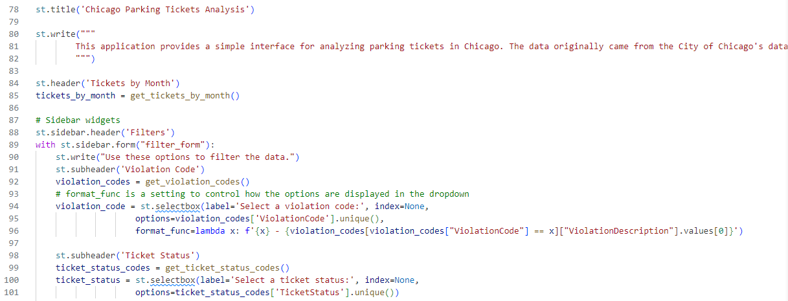
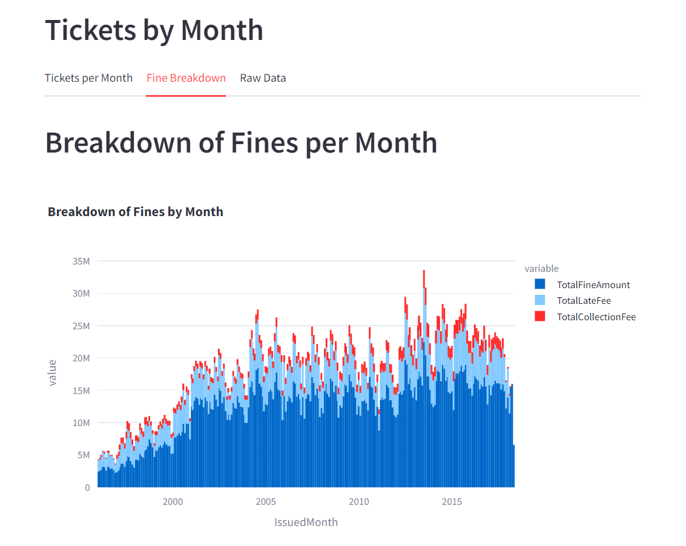
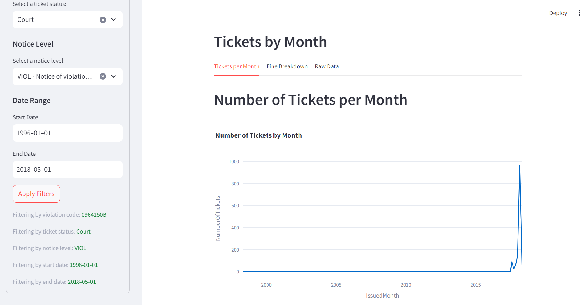
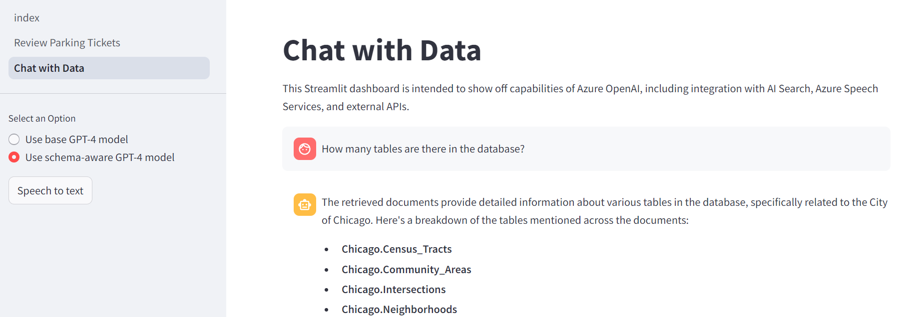
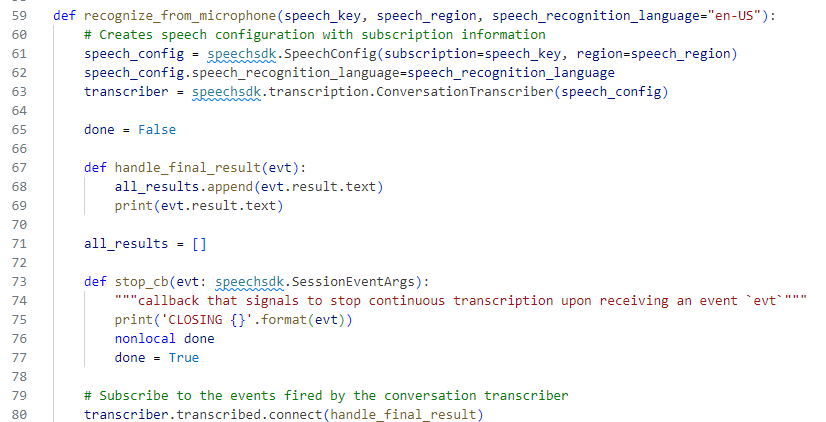
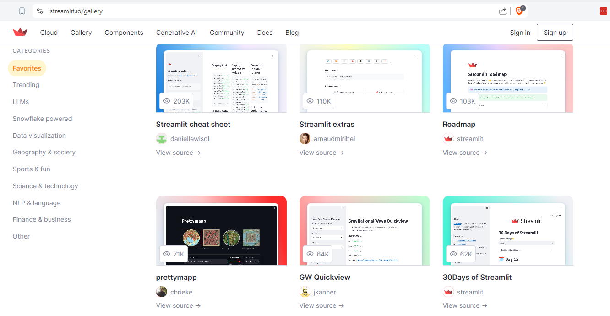
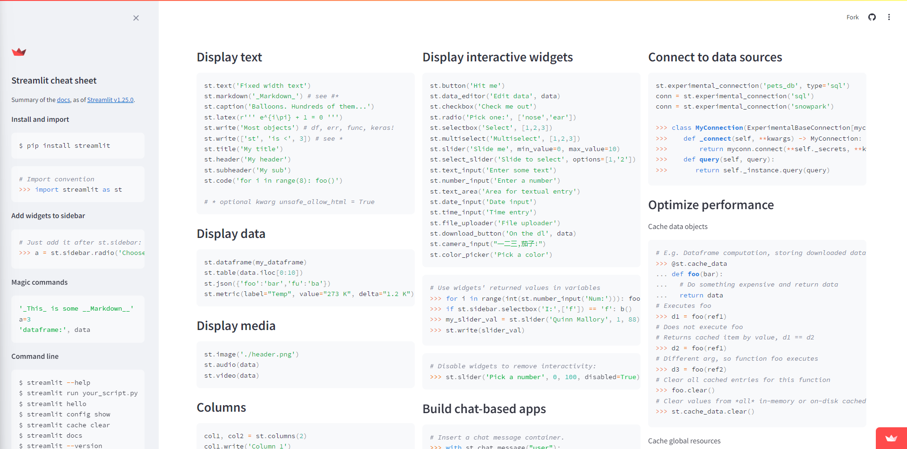
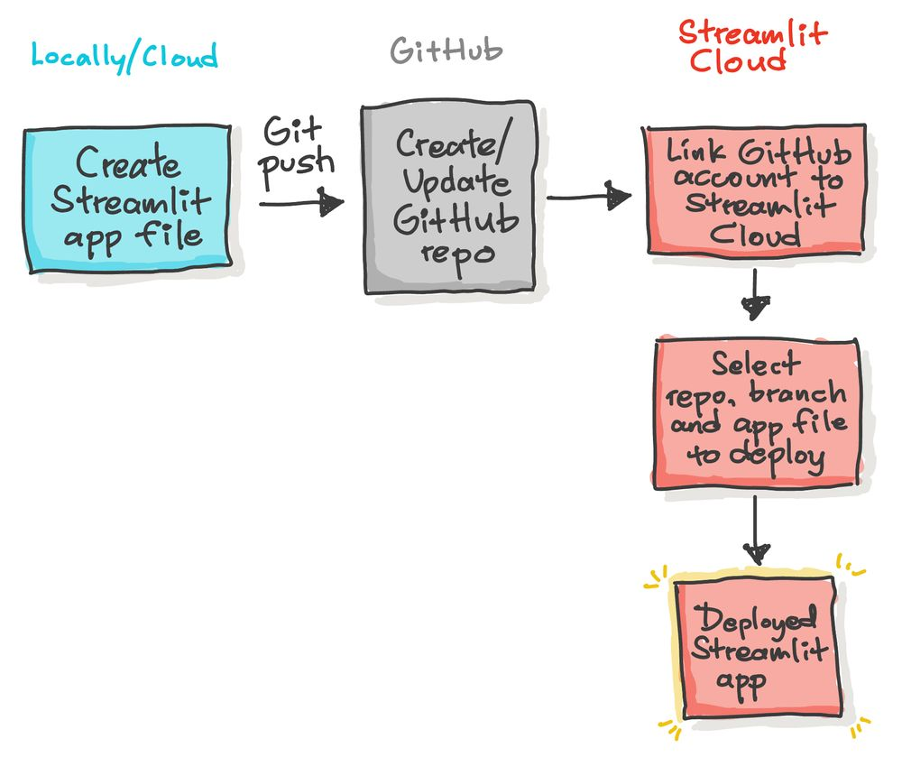

Build a Data Application with Streamlit
Kevin Feasel (@feaselkl)https://csmore.info/on/streamlit
Who Am I? What Am I Doing Here?


Motivation
My goals in this talk:
- Introduce you to Streamlit
- Walk through some of the functionality in Streamlit
- Build sample Streamlit applications
- Discuss hosting options and considerations
What We'll Do
What We'll Do
What We'll Do
What We'll Do
What We'll Do
Agenda
- An Overview of Streamlit
- Key Mechanics of Streamlit
- Building a Streamlit Application
- Hosting Streamlit
The Use Case
Streamlit is a Python library for building and sharing data applications.
A data application is a web-based application intended to display, analyze, or visualize data. This data may come from a database, set of files, API, or other data source.
Not All Applications are Data Applications
Data applications in Streamlit allow for some level of interaction but Streamlit is not a replacement for general-purpose web development. There are some simplistic mechanisms in place for handling session state and user input, but you may find a more comprehensive web framework like Django to fit when you need to accept form input or display a variety of content-driven, templated pages.
Why Use Streamlit?
- Develop web applications without needing to think about HTML, CSS, or JavaScript
- Works well with a variety of core Python libraries (scikit-learn, Pandas, spaCy) plus visualization libraries (Plotly, Matplotlib)
- Quickly visualize data science projects, similar to notebooks
- Allow for stream-based inputs and more interaction than notebooks
- Allow people who don't have Python installed to interact with your data
Pre-Requisites
- You must be running Python 3.8 or later to host Streamlit
- Users must have a supported browser: Chromium (Chrome, Edge, Brave), Firefox, or Safari
Agenda
- An Overview of Streamlit
- Key Mechanics of Streamlit
- Building a Streamlit Application
- Hosting Streamlit
Before Installing Streamlit
One very helpful preparatory action before installing Streamlit is to create a virtual environment.
Virtual environments help you isolate project dependencies and prevent scenarios where different projects have different and conflicting versions of dependency packages.
Run this in the root directory where you'll keep your Streamlit code.
Before Installing Streamlit
Then, activate your virtual environment.
Deactivating Virtual Environments
A virtual environment will be active until you close your terminal or manually deactivate it. To deactivate the virtual environment and return to your main Python setup:
Installing Streamlit
Streamlit also installs the pyarrow package.
Running Streamlit
Streamlit will then kick off a web server that will host your Python file, usually on port 8501.
Getting Inspiration
The Streamlit gallery has curated applications you can use as inspiration.

Streamlit Cheat Sheet
Daniel Lewis has a nice cheat sheet Streamlit application.

Agenda
- An Overview of Streamlit
- Key Mechanics of Streamlit
- Building a Streamlit Application
- Hosting Streamlit
Building a Streamlit App
The best way to get a handle on Streamlit is to build applications in the framework. Let's look at the process to build up a full-featured data application!
Demo Time
Themes
Streamlit has some basic theming options available. You can try them out in the browser or create a config file in ./.streamlit/config.toml
Agenda
- An Overview of Streamlit
- Key Mechanics of Streamlit
- Building a Streamlit Application
- Hosting Streamlit
Hosting Streamlit
There are a few ways to host Streamlit applications.
- Host on a server
- Host in a Docker container
- Host on Streamlit Community Cloud
- Host in Snowflake
Hosting on a Server
Self-hosting Streamlit requires a web server proxy like NGINX. This proxy will allow you to forward inbound calls to your running Streamlit process.
On Linux, you can run your Streamlit app as a background service using systemd. To do so, you will need a config file in /.config/systemd/user/.
Hosting on a Server
Hosting on a Server
Once you have a config file, you can enable and activate the service:
Hosting in Docker
One common method for deploying Streamlit apps is to host them in Docker containers. A sample Dockerfile could look like:
Deploying in Docker
Once you have a Dockerfile, you can build the image and run it. The following command will create a Docker image called "streamlit" based on your current directory's solution, including Dockerfile. It will then run an instance of the container image on port 8501.
Hosting on Streamlit Community Cloud
Streamlit offers a free service for hosting your applications, called Streamlit Community Cloud. This works well for demo apps or community tools, and there are some limited capabilities for restricting access to apps.
Hosting on Streamlit Community Cloud
Hosting in Snowflake
If you are a Snowflake customer, you can host Streamlit applications in Snowflake, unless you are using AWS PrivateLink or Azure Private Link.
There are some product limitations versus self-hosting, but this is a good option for Snowflake customers who want to keep their data close to their data warehouse.
Hosting Tips and Tricks
- Streamlit is not a general-purpose web framework, so you may need to use a different tool for more complex web applications
- Limit input ranges to reduce network traffic and improve performance
- Take advantage of caching to reduce the number of times you need to re-run expensive computations
- Keep expensive assets (e.g., trained models) local--don't download them every time you run the app
- Optimize queries and API calls to reduce latency
- Use a proxy server (like NGINX) and you can host multiple copies of your Streamlit app at once for load balancing
Wrapping Up
Over the course of this talk, we have gained an understanding of what Streamlit is, how quickly you can build a Streamlit application, and various options available for hosting Streamlit applications.
Wrapping Up
To learn more, go here:
https://csmore.info/on/streamlit
And for help, contact me:
feasel@catallaxyservices.com | @feaselkl
Catallaxy Services consulting:
https://CSmore.info/contact